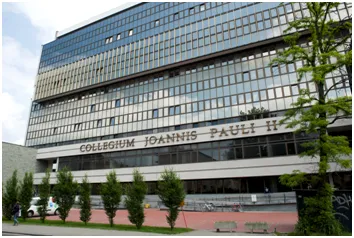
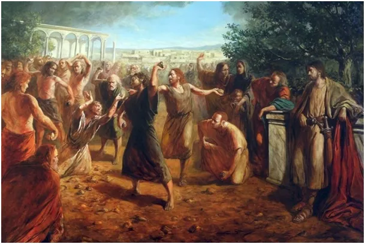

KUL kontra makowiec, stawiam na makowiec.
Długo się zastanawiałem zanim napisałem ten tekst, bo uderza on pozornie we "własne gniazdo", ale przeważyło przekonanie, że "własne" musimy pisać w cudzysłowie.
Boże Narodzenie w ludzkiej postaci to poważna sprawa i dlatego czas wspomnień tego zdarzenia spędzamy wyjątkowo. Zanim przechodzimy do teologii podczas pasterki zajadamy się różnymi pysznościami. Osobiście makowiec to jest mój hit świąteczny i mogę całe święta przeżyć na makowcu. Poza stałymi punktami kulinarnymi mamy bardzo konkretne stałe punkty liturgii, w tym podstawę chrześcijaństwa, tj. narodziny Boga w osobie Jezusa, Mesjasza, na którego Żydzi czekali kilka tysięcy lat. Wielu z nich przyjęło chrzest, ale wielu nie i czekają na Zbawiciela nadal nazywając naszego Syna Bożego oszustem, bo trzeciego wyjścia nie ma.

Poza makowcem stałym punktem świąt jest czytanie listu rektora KUL w dniu 26 grudnia. W tym dniu obchodzimy wspomnienie św. Szczepana, pierwszego męczennika ukamienowanego pod murami Jerozolimy przez najbardziej religijnych Żydów. Po dyskusji teologicznej ze Szczepanem, jego nieprzekonani rodacy sięgnęli po ostateczne argumenty w postaci dużych kamieni rzucanych na czaszkę konającego męczennika.

Po tej Ewangelii nastąpiło odczytanie listu rektora KUL (Katolicki Uniwersytet Lubelski) do wiernych. Od razu padło słowo "dialog", niestety już czułem, w którą stronę to pójdzie. Szybko się okazało, że rektor się chwali, że KUL właśnie przyznał tytuł doktora honoris causa pewnemu rabinowi. Rabin ten jest autorytetem ds. dialogu i od niego mamy się uczyć. Rektor albo z braku wyobraźni, albo złośliwie, wybrał sobie temat i terminy. Oczami wyobraźni widziałem bomby spadające na Gazę jak kamienie na głowę św. Szczepana.
Dialog nie jest sam w sobie żadną wartością i nie zawsze jest możliwy, często jest stratą czasu. Trudno z sensem dialogować z kimś, kto neguje nasze najbardziej podstawowe świętości nazywając je oszustwem. Jest jednak w tej historii wątek nadziei. Rzucający kamienie na św. Szczepana zdejmowali swe wyjściowe płaszcze, aby nie pochlapać ich krwią i kładli je u nóg Szawła, który był intelektualnym liderem synagogi i nie brudził sobie rąk. Szawła, głównego prześladowcy pierwszych chrześcijan, znamy jako późniejszego św. Pawła. Co musiało się stać, aby ten fanatyk przeszedł na stronę skwapliwie prześladowanych. Ten silny człowiek, spotkał osobiście Jezusa, przy czym spadł z konia i oślepł. Opuszczony przez swych przybocznych dochodził do zdrowia w biednej izbie Ananiasza w Damaszku, którego jechał uwięzić. Paweł odzyskał wzrok po modlitwie Ananiasza i stał się fundamentem chrześcijaństwa wśród nie Żydów.
Znam wielu absolwentów tej uczelni i wiem, że KUL z nazwy "katolicki" to wylęgarnia różnych modernistycznych głupstw. Wielu młodych ludzi zwiedziona tym przymiotnikiem idzie tam pobierać nauki. Od 30 lat niestety uczelnia ta dryfuje z głównym nurtem na rafy "dialogów", itp. aktualnie modnych treści. Nowe budynki to potężne koszty, nie sposób budować wysoko bez wsparcia władzy, a kto płaci ten wymaga. Jedni burzą by inni mogli budować.
Paweł Klimczewski